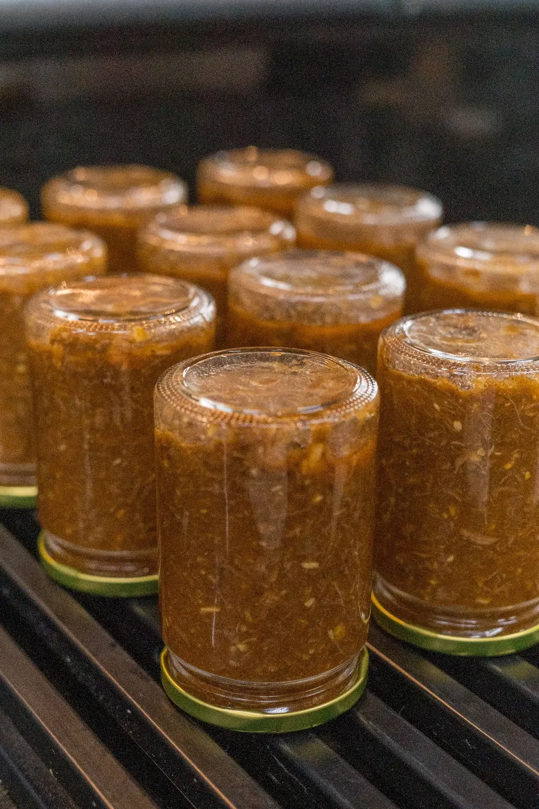
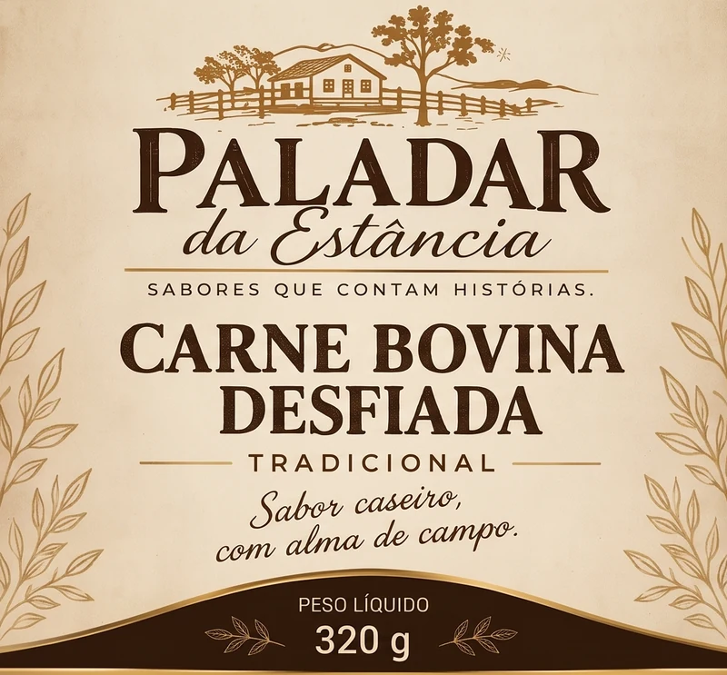

Sabores que contam histórias
Tradição na mesa, conveniência no dia a dia
Molho pronto para consumo à base de carne, com sabor de comida feita em casa e sem conservantes.

- Receitas feitas com tempo e cuidado
- Praticidade para o seu dia a dia
- Sem conservantes
- Sabor autêntico caseiro
A lacuna entre o industrializado e a comida de verdade
Paladar da Estância nasce para atender quem tem pouco tempo para cozinhar, mas não abre mão de refeições saborosas, seguras e com as características da comida feita em casa.
Produzimos e comercializamos molho pronto para consumo à base de carne, com sabor caseiro e sem conservantes. Praticidade sem abrir mão da qualidade.
90 dias de validade. Os testes para 180 e 360 dias estão em andamento.
Sabor caseiro, com alma de campo.
Por que escolher o nosso molho
- Sabor autêntico
- A experiência da comida caseira levada à sua mesa.
- Ingredientes selecionados
- Matéria-prima de qualidade e de origem confiável.
- Praticidade
- Pronto para servir: refeição de qualidade em minutos.
- Sem conservantes
- Segurança alimentar sem aditivos artificiais.
- Receita original
- Um sabor exclusivo, desenvolvido com tempo e cuidado.
- Qualidade premium
- Presença em empórios, mercados e lojas gourmet.

Carne bovina desfiada, pronta para servir
Um vidro resolve a refeição: é só aquecer e levar à mesa. Feito para a rotina de casa e para a prateleira de empórios, mercados e vendas diretas.
- Peso líquido
- 320 g por vidro
- Preparo
- Aqueça e sirva
- Conservantes
- Nenhum
- Validade
- 90 dias
- Ideal para
- Famílias e profissionais com rotina corrida
- Onde encontrar
- Empórios, mercados e vendas diretas
O que vai no vidro

Ingredientes
Carne bovina (acém), cebola, tomate, alho, sal, vinagre e óleo vegetal.
Não contém glúten
Conservação
Manter em local fresco, seco e ao abrigo da luz. Após aberto, conservar na geladeira e consumir em até 5 dias.
Informação nutricional
| Nutriente | 100 g | 320 g | %VD* |
|---|---|---|---|
| Valor energético (kcal) | 180 | 576 | 29 |
| Carboidratos (g) | 3,0 | 9,6 | 3 |
| Açúcares totais (g) | 1,5 | 4,8 | - |
| Açúcares adicionados (g) | 0 | 0 | 0 |
| Proteínas (g) | 20,0 | 64 | 128 |
| Gorduras totais (g) | 8,0 | 25,6 | 39 |
| Gorduras saturadas (g) | 3,0 | 9,6 | 48 |
| Gorduras trans (g) | 0 | 0,6 | 30 |
| Fibra alimentar (g) | 0,5 | 1,6 | 6 |
| Sódio (mg) | 615 | 1.965 | 98 |
*% Valores Diários com base em uma dieta de 2.000 kcal ou 8.400 kJ. Seus valores diários podem ser maiores ou menores, dependendo de suas necessidades energéticas.
Feito para quem valoriza sabor e tempo
-
Rotina corrida
Profissionais que querem comer bem sem cozinhar por horas.
-
Famílias e casais
Quem busca praticidade sem perder o sabor caseiro.
-
Apreciadores
Clientes de empórios e lojas gourmet que valorizam qualidade.
Qualidade e sabor em cada vidro
A união entre tradição, sabor e praticidade
Em breve, um caderno de receitas feito para aproveitar ao máximo o nosso molho.